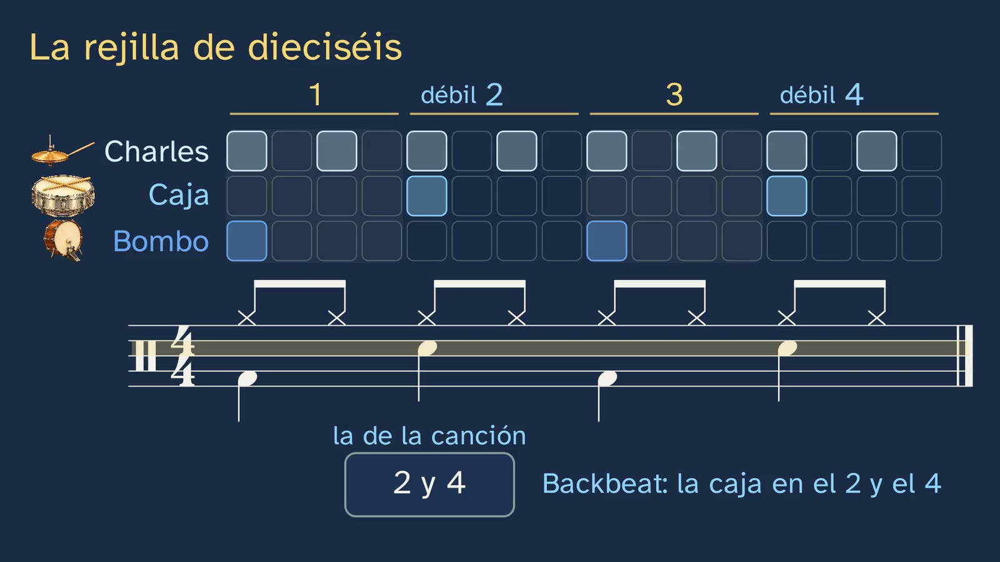

Pulse and rhythm
In a nutshell
This is the second class of the topic "A song, layer by layer", a practice class: it opens up the rhythm layer of the channel's song. Its message fits in one line: the listener keeps the pulse, the bar groups it, and the sixteen-step grid of drum machines, which is a score, writes down where each hit falls; and what makes a rhythm move you is where its hits fall. All the music was composed and synthesised by the channel, note by note, with the song from class 1 (eight bars in C major, at 90 pulses per minute). Malik speaks and never sings, and no copyrighted song is played.
The class was remade simpler after its second draft (the channel's ADR-186): each concept is explained before it is used, with its sound, its drawing and its reason why. Swing, the triplet and compound time move to the topic 2 class "Twelve bars and three chords: the blues and swing".
First, the three pieces of the drum kit, explained and heard one by one: kick drum, snare and hi-hat (0:38). The hook, with its context: in 1980, the Japanese company Roland brought out the TR-808 drum machine, a machine that plays the drums with exact timing, and its manual taught how to write a rhythm for it on a grid of sixteen boxes (2:28). But an exact rhythm can sound like a robot or make you dance: what does it depend on?
It is heard before it is named: students clap on the song's pulse (3:09), and rhythm is defined against it, as the pattern of hits of each layer. They count and find out on which number the chord changes: one is where the weight falls, the start of the bar; each pulse of the bar is a beat; one, the strong beat; two and four, weak; three, medium-strong (3:59). What the two numbers of 4/4 say, with the whole note, worth four quarter notes (4:59), and duple, triple and quadruple, heard with the channel's drum kit. Then the quarter note, the eighth note and the sixteenth note as pieces of the pulse, and the sixteen-step grid, which is a whole bar (6:15), with the drum notation right underneath, note by note under its box: its lines don't mark pitches but instruments (7:26). Students predict where the snare goes, hear the two options and say which one makes their body move more: it is the backbeat, and the typical mistake ("the strong beat is the hit that sounds loudest") is taken apart with the snare itself (9:28). Tamlyn found it on 644 of 712 rock and roll records (9:53).
The hardest part, slowly and at a slow tempo (10:31): the two halves of each pulse, strong and weak, and how they are counted; the song's kick drum, which comes early; the offbeat and syncopation, each with its definition, in the grid and in the score, and compared side by side. Students recognise for themselves that the long D in bar 4 is not a syncopation (13:56). Without the hi-hat, nothing sounds on beat three and the clap falls there anyway: the listener keeps the pulse (14:27). And the answer to the hook, with Stupacher et al. (2022): what makes you move most is a rhythm syncopated just right (15:33). The class closes with the ostinato (15:59), body percussion (foot, clap and thigh, with a guide that is withdrawn) (16:24), a single-voice rhythmic dictation, with the question of whether any hit is an offbeat (18:30), and the open question: is the groove in exact timing or in the drummer's small deviations?
Objective. By the end, students will know how to find the pulse of a song, group it into bars, read and write a rhythm on the sixteen-step grid (the one drum machines use, which is a score) and recognise the backbeat, the offbeat and syncopation.
For readers outside Spain: the Bachillerato is the last two years of secondary school (ages 16–18). Musical Language and Practice is a first-year subject in the Music and Performing Arts pathway of the Arts strand of the Bachillerato. The BOE is Spain's Official State Gazette, where every law and decree is published. Spain is divided into seventeen autonomous communities (regions), plus the autonomous cities of Ceuta and Melilla; each completes the national curriculum with its own, and this sheet mentions some of them. The DLE is the dictionary of the Real Academia Española (Royal Spanish Academy), and UCM is the Complutense University of Madrid. In Spain the notes are named with a fixed do (do, re, mi, fa, sol, la, si); this sheet uses letter names (C, D, E, F, G, A, B). "Offbeat" translates the Spanish contratiempo, which Spanish textbooks define more narrowly than everyday English usage: a note on a weak half of the pulse when that same instrument was silent on the strong half before it. The video is in Spanish, with English subtitles. Spanish documents (the decree) are quoted in our translation; English sources are quoted in the original, and the titles of Spanish sources are kept as published. Decimals are written here with a point (0.57), not with the Spanish comma.
Curriculum
Spain's Royal Decree 243/2022, annex II, Musical Language and Practice, a subject in the Music and Performing Arts pathway of the first year of Bachillerato. The BOE's consolidated text was checked on 28/10/2026. Our translation of the official Spanish text.
| Element | What the decree says | Where the class works on it |
|---|---|---|
| Core knowledge (block A) | "Rhythm: time signatures; irregular and free rhythms; polyrhythms and polymeters, tuplets. Modality." | The pulse, the bar and its beats, and 4/4 (3:09–6:03). Compound time signatures, tuplets, mixed meter and polyrhythm, in topic 2 |
| Core knowledge (block A) | "Musical elements in the Western musical tradition, in folk music and in urban popular music." | The drum kit, piece by piece (0:38); the backbeat of rock and roll and its roots in the hand-clapping of African American churches (9:53) |
| Core knowledge (block A) | "Conventional notation (traditional writing) and non-conventional notation…" | The sixteen-step grid (non-conventional notation) and drum notation, note by note (6:15–9:27); the melody, in the grid and in the score (12:27) |
| Core knowledge (block B) | "Strategies for listening to or viewing musical works or excerpts." | The whole class: the pulse, the bar, the snare, the kick drum, syncopation |
| Core knowledge (block B) | "Techniques for writing down simple single-voice dictations." | The kick-drum dictation (18:30) |
| Core knowledge (block B) | "Performance techniques through the voice, the body or musical instruments, with or without accompaniment." | Body percussion over the song without its drums (16:24) |
| Specific competence 1 | "To cultivate active listening…" | The whole class; the subjective side, at 9:06 (which one makes your body move?) |
| Specific competence 2 | "…analysing and comparing scores in various notations…" | The grid and the score, on the same clock (7:26, 8:02) |
| Specific competence 3 | "To apply musical performance strategies, using reading as a means of approaching the work…" | Body percussion and the dictation |
| Criterion 1.1 | "To recognise and describe the different parameters and musical elements of a work…" | Pulse, bar, strong and weak beats, backbeat, offbeat and syncopation; students decide for themselves whether a long note is a syncopation (13:56) and whether any hit in the dictation is on the offbeat (19:36); both times the answer is no, and why |
| Criterion 2.1 | "To describe the main characteristics of the musical elements… present in scores in conventional and non-conventional notation…" | The grid and the drum notation |
| Criterion 2.2 | "To compare the representation of musical elements in scores in different notations…" | The grid shows at a glance where each hit falls; the score says it with note values, and any musician can read it (8:19) |
| Criterion 3.1 | "To read simple scores independently, with or without the support of listening." | The drum notation, under the grid, and the solution to the dictation |
| Criterion 3.2 | "To perform simple musical excerpts… through the voice, the body or musical instruments…" | Body percussion (16:24) |
| Criterion 3.4 | "To generate simple musical or choreographic ideas, using different instruments, the voice or the body, in free or guided improvisations." | Invent your own kick drum: move its hits to other squares and look for the one that moves you most (18:18) |
What the channel makes concrete. No curriculum in force names the drum kit piece by piece, the sixteen-step grid or the backbeat: they are how the channel makes concrete the core knowledge on rhythm, notation and urban music (the topic sheet explains this). Body percussion appears in the curricula of Madrid and of Castile and León.
How the class is built
Video chapters
About twenty-two minutes. It is a practice class built on the department's model, hear, see and do: each idea is heard before it is named, seen on the same clock as the sound (the grid and the score light up with each hit, and nothing lights up without sound) and done with the body or with a pencil. The detailed blocks (4/4, the note values, drum notation, the typical mistake, the offbeat and syncopation) go with a slower voice.
| Chapter | What happens | Why this way |
|---|---|---|
| What we'll see (0:00) | Malik introduces the class; the topic map with its keyboard. | The map, in every class. |
| What you already know (0:26) | Which layer keeps the pulse? The rhythm, and its three pieces, heard one by one. | Retrieving class 1 and explaining, with the object itself, what was only named there. |
| The solutions (1:41) | The three exercises from class 1. | Brief, with each question in view. |
| A machine that plays the rhythm (2:28) | The TR-808 (1980) and its grid; Malik: what decides whether a rhythm moves you? | The hook, with its context. |
| The pulse (3:09) | Claps on the pulse; 90 per minute; rhythm, on top of the pulse. | Hearing and doing before naming. |
| The bar (3:59) | The chord changes on one: bar, beat, strong, weak and medium-strong; 4/4; duple and triple, heard. | Predict, hear and name, with the reason for each name. |
| The sixteen-step grid (6:15) | Note values as pieces of the pulse; the grid and its score, row by row; the snare on 1 and 3 or on 2 and 4: the backbeat; the typical mistake. | The piece nobody makes: grid, score and sound on the same clock (criteria 2.1 and 2.2). |
| How do we know? (9:53) | 644 of 712 rock and roll records (Tamlyn, 1998); no inventor. | The evidence for what is claimed. |
| The hit that comes early (10:31) | The halves of the pulse; the kick drum that comes early: offbeat; the melody's syncopation; the two, compared; is it a syncopation?; the pulse that doesn't sound; what moves you (Stupacher et al., 2022); the ostinato. | The hard part, slowly, repeated and checked by the students. |
| Your turn, with your body (16:24) | Foot, clap and thigh over the song without its drums, with a guide that sounds and is withdrawn; invent your own kick drum. | The example that is withdrawn (article 14); improvising (criterion 3.4). |
| A dictation (18:30) | The kick drum of a new bar, single-voice; is any of its hits an offbeat? | A reading or a dictation in every class. |
| Practice (19:57) | Three exercises; the open question, with two versions of the song; the goodbye. | The solutions, in class 3. |
A plan for a 50-minute lesson
Designed for watching in class with good speakers (with a laptop's speakers, the kick drum is harder to hear) and room to clap. Each student, with two sixteen-step grids drawn (the student sheet includes one to cut out).
| Minutes | What is done |
|---|---|
| 0–3 | No video. Play a song the group knows and everyone claps on the pulse. Where does each person's clap fall? |
| 3–15 | Video up to the end of "The bar" (6:15). Stop when it asks on which number the chord changes (3:59): everyone counts out loud. |
| 15–24 | Video to the end of "How do we know?" (10:31). At the snare prediction (8:34) and at "which one makes your body move?" (9:06), a show of hands, with reasons. |
| 24–33 | "The hit that comes early", "What moves you" and the ostinato (10:31–16:24). At "Is it a syncopation?" (13:56), each student decides before hearing the answer. |
| 33–45 | Body percussion (16:24) as a group, standing if possible; then the dictation (18:30) on the grid. |
| 45–50 | The open question, as a whole class. |
Typical mistakes and how they are handled
- "The strong beat is the hit that sounds loudest." It is this class's mistake (9:28). Strong and weak are positions in the bar (metrical accent), not volume (dynamic accent): in the backbeat, the hit you hear most, the snare, falls on the weak beats 2 and 4. Hindemith, and Lerdahl and Jackendoff, draw the distinction; dictionaries define the backbeat as the accent on 2 and 4. The class avoids saying "accent" for the one and speaks of "where the weight falls", so as not to reinforce the mistake before taking it apart.
- Calling any hit off the pulse a syncopation. In Spanish textbooks (UCM, Curso 0), the offbeat is a note on a weak part with the strong part before it silent (the song's kick drum, between 2 and 3, and between 3 and 4), and syncopation is a note that starts on a weak part and is held over the strong one (the melody's E, from the weak half of 2 to 3). The offbeat is judged in each instrument's line: on 2 the snare sounds, but the kick drum is silent. Research on groove uses "syncopation" in a broad sense; the class says "syncopated rhythm" so as not to mix them up.
- "A long note is a syncopation." The D in bar 4 lasts a pulse and a half but starts on one, on a strong half: it is not one (13:56). A syncopation starts on a weak half.
- "If it doesn't sound, there is no pulse." The listener supplies the pulse: in the song without the hi-hat, nothing sounds on beat three and the clap falls there anyway (14:27).
- "Quantised is robotic; the groove is in the deviations." It is Charles Keil's idea (1987). When it was put to the test, the on-time versions made people want to move as much as the originals, and the exaggerated ones less (Senn et al., 2016, 159 people; Frühauf, Kopiez and Platz, 2013, 93 music students). It is the open question: it is not closed.


Questions and solutions
Stop and think (in the video)
- Which layer keeps the pulse? (0:26). The rhythm: the kick drum, the snare and the hi-hat.
- On which number does the chord change? (3:59). On one, the strong beat, where the kick drum also falls.
- Where would you put the snare: on 1 and 3, or on 2 and 4? (8:34). In the song, on 2 and 4: the backbeat. There is no "right" answer: the song's is the most common in rock and roll.
- Which of the two makes your body move more? (9:06). It is a question about feelings: every answer is valid if it is reasoned from what happens in the music.
- Is the long D in bar 4 a syncopation? (13:56). No: it starts on one, on a strong half. A long note is not enough.
- The dictation (18:30). The kick drum, on 1, between 1 and 2, and on 3: steps 1, 3 and 9 of the grid.
- Is any of those kick-drum hits an offbeat? (19:36). None: the one between 1 and 2 falls on a weak half, but on the strong half before it the kick drum was already sounding.
The student sheet: strong or weak? 1. S, neither (on the number). 2. S, neither. 3. W, offbeat (the kick drum is silent on 2). 4. W, syncopation (it is held over the strong half of 3). 5. S, neither (a long note is not enough).
Practice (the solutions, at the start of class 3)
- Count the pulses of a song for 15 seconds, work out how many it has per minute and write down which layer marks them most clearly. It depends on the song: multiply by four. With the channel's song you get 22 or 23 in 15 seconds: about 90 per minute. Most often the pulse is marked by the kick drum and the snare; in a ballad, the piano may mark it.
- Write in a sixteen-step grid, and then in a score, a rhythm with the kick drum on 1 and 3, the snare on 2 and 4, and the hi-hat on the eight eighth notes. It is the rhythm the class builds. Grid: hi-hat on steps 1, 3, 5… 15; snare on steps 5 and 13; kick drum on steps 1 and 9. Score: eight hi-hat eighth notes with x noteheads above the staff; below, kick drum in the first space on beats 1 and 3, and snare in the third space on beats 2 and 4.
- Explain why the strong beat is not the hit that sounds loudest. A complete answer: strong and weak say where the bar puts its weight (one, where it begins and the chord changes), not how loud each hit sounds; in rock, the snare sounds loud and falls on the weak beats, 2 and 4.
Keep thinking. Where is the groove: in exact timing or in the drummer's small deviations? It has no textbook answer. Three paths for the conversation: what the experiment measures (the urge to move, not liking); what it doesn't measure (playing in a group, live, really dancing); and the channel's own song, which was remade with a few milliseconds of "feel" and phrasing because it sounded "very computer-like" (the channel's ADR-157). If you get a good discussion going, tell us about it in the Ágora, in this class's teachers' thread.
A classroom activity
The class drum kit (about 15 minutes, in groups of three; it works on the block B core knowledge of performing with the body and of dictations, and criteria 3.1, 3.2 and 3.4).
- Share out the drum kit (3 minutes). In each group, one is the kick drum (the foot), another the snare (a clap) and another the hi-hat (the hand on the thigh). With the grid in view, they play it together over a song with a clear pulse.
- Write (5 minutes). Each group invents a new bar by changing only the kick drum, and writes it in the grid and in a score.
- Dictate it (5 minutes). Each group plays its bar four times and another group writes down its kick drum and marks which hits are offbeats.
- As a whole class (2 minutes). Which kick-drum parts made people want to move most? Did they have offbeats? How many?
For teachers: what they will find. The foot and the clap come straight away; the thigh, twice per pulse, is harder. If the same person plays the thigh and the clap, on 2 and 4 the thigh hand goes up to the clap (it is what the video does). Kick-drum parts with too many offbeats make them lose their place: it is the class's groove curve, in the classroom.
Open resources
- LMMS, a free and open-source program for Windows, macOS and Linux, with a sixteen-step pattern editor ("4 steps to each beat"): https://lmms.io. It is one of the programs for the topic's workshop (class 8).
- GarageBand for iPhone and iPad, free, with a step sequencer: https://support.apple.com/en-us/101954.
- Ableton Learning Music, in the browser, free and in Spanish: a rhythm grid to build and undo without installing anything: https://learningmusic.ableton.com/. Its cookie notice asks anyone under 16 to press "Close" so as not to give consent.
- The TR-808 manual, on Roland's website (in English): https://static.roland.com/assets/media/pdf/TR-808_OM.pdf.
- Tamlyn's thesis, open access in the University of Liverpool's repository: https://livrepository.liverpool.ac.uk/3175210/.
Notes for teachers
- The swing in the channel's song. Since class 1, the first eighth note of each pulse lasts 57% of the pulse: 0.57/0.43 = 1.33 : 1. This class doesn't name it (ADR-186: whatever doesn't fit with its explanation goes to its own class): it talks about the written grid, where the two eighth notes are equal. It is the surprise topic 2 has in store, in the blues and swing class, with its measurement (Corcoran and Frieler, 2021). No sentence in the video says the song sounds "exact".
- The medium-strong beat. The DLE, under "tiempo", gives as an example that a bar of four-four has two strong beats and two weak ones; Zamacois and other treatises call the third one medium-strong (as the Gran Enciclopèdia de la Música notes under «semicompàs»). The class says it like this: one, strong; three, medium-strong; two and four, weak.
- "Accent" and "weight". In everyday speech, accent means "louder". So as not to reinforce the typical mistake, the class says the strong beat is "where the weight falls" (apoyo); in the classroom you can introduce "metrical accent" versus "dynamic accent" (Hindemith; Lerdahl and Jackendoff, 1983).
- The groove experiment. Senn et al. (2016) used two bass-and-drums grooves recorded by professionals (funk at 100 pulses per minute and swing at 150), with 159 people: the quantised versions and the originals made people want to move just as much, and the versions with exaggerated deviations less, especially among musicians. They measured groove (the urge to move), not liking in general.
- The groove curve. It rests on Stupacher et al. (2022), a perspective article, and on two large studies: Matthews et al. (2019), with 201 people, and Stupacher, Wrede and Vuust (2022), with 174. The classic study by Witek et al. (2014) had 66: the channel doesn't present small studies as evidence.
What the class leaves out, and why
- Swing, the triplet and compound time. They move to the topic 2 class "Twelve bars and three chords: the blues and swing" (ADR-186), where they fit with their explanation.
- The "natural" tempo of 120 pulses per minute. The figures come mostly from dance-music lists, and the comfortable tempo changes with age (McAuley et al., 2006, 305 people): there is no tempo of the body.
- The TR-909 and its "shuffle". Roland says its sequencer already had swing, but a second source is missing: it is not told.
- The origin of the word "backbeat". Only one dictionary gives it (background beat): the class does not translate it into Spanish.
- Mixed meter, polyrhythm and the rhythms of the world. They are topic 2, "The rhythms of the world".
Sources
Curriculum
- Royal Decree 243/2022, annex II, Musical Language and Practice, consolidated text (in Spanish): https://www.boe.es/buscar/act.php?id=BOE-A-2022-5521.
The drum kit
- Britannica, "bass drum", "snare drum" and "hi-hat"; Columbia University, Center for Jazz Studies, Jazz Glossary; Yamaha, Musical Instrument Guide, "Drums".
- N. Weinberg (1994). "Guidelines for Drumset Notation". Percussive Notes (PAS), June, pp. 15-26.
The machine
- Roland Corporation (1980). TR-808 Rhythm Composer Owner's Manual: https://static.roland.com/assets/media/pdf/TR-808_OM.pdf.
- Roland, "The TR-808 Story": https://www.roland.com/us/promos/roland_tr-808/; Roland, company overview: https://www.roland.com/global/company/overview/.
The bar and the typical mistake
- Real Academia Española, Diccionario de la lengua española: "tiempo", "negro", "corchea", "semicorchea", "sincopado", "ostinato", "vals".
- Rodríguez Cuervo and García Mira (2024-2025). Curso 0: Herramientas básicas del lenguaje musical. Complutense University of Madrid, units 1 and 7 (the time signature as a fraction; syncopation and offbeat).
- Gran Enciclopèdia de la Música, "semicompàs": https://www.enciclopedia.cat/gran-enciclopedia-de-la-musica/semicompas.
- M. Gotham, C. Hamm and K. Shaffer. Open Music Theory, "Simple Meter and Time Signatures".
- P. Hindemith (1946). Elementary Training for Musicians (in Spanish, Adiestramiento elemental para músicos, Ricordi Americana); F. Lerdahl and R. Jackendoff (1983). A Generative Theory of Tonal Music. MIT Press.
- American Heritage Dictionary and Merriam-Webster, "backbeat".
The backbeat
- G. N. Tamlyn (1998). The Big Beat: Origins and Development of Snare Backbeat and Other Accompanimental Rhythms in Rock'n'Roll. PhD thesis, University of Liverpool. doi:10.17638/03175210.
- M. Baur (2021). "Towards a Cultural History of the Backbeat". In The Cambridge Companion to the Drum Kit. Cambridge University Press, pp. 34-51.
Syncopation and groove
- J. Stupacher, T. E. Matthews, V. Pando-Naude, O. Foster Vander Elst and P. Vuust (2022). The sweet spot between predictability and surprise. Frontiers in Psychology, 13, 906190. doi:10.3389/fpsyg.2022.906190.
- T. E. Matthews et al. (2019). PLoS ONE, 14(1), e0204539; J. Stupacher, M. Wrede and P. Vuust (2022). PLoS ONE, 17(5), e0266902.
- C. Keil (1987). Participatory Discrepancies and the Power of Music. Cultural Anthropology, 2(3), 275-283.
- O. Senn, L. Kilchenmann, R. von Georgi and C. Bullerjahn (2016). The Effect of Expert Performance Microtiming on Listeners' Experience of Groove in Swing or Funk Music. Frontiers in Psychology, 7, 1487. doi:10.3389/fpsyg.2016.01487.
- J. Frühauf, R. Kopiez and F. Platz (2013). Musicae Scientiae, 17(2), 246-260.
What the class leaves out
- J. D. McAuley, M. R. Jones, S. Holub, H. M. Johnston and N. S. Miller (2006). The Time of Our Lives: Life Span Development of Timing and Event Tracking. Journal of Experimental Psychology: General, 135(3), 348-367 (305 people, aged 4 to 95).
- C. Corcoran and K. Frieler (2021). Playing It Straight: Analyzing Jazz Soloists' Swing Eighth-note Distributions with the Weimar Jazz Database. Music Perception, 38(4), 372-385. doi:10.1525/mp.2021.38.4.372.
About this class
GinCol Lab is a free science channel for curious minds. Malik is an illustrated character, not a real person, and his voice is synthetic: computer-generated with Microsoft Azure AI Speech and not imitating any known person. All the music was composed by the channel, note by note; its sounds come from numpy, pedalboard and Stable Audio 3 (Powered by Stability AI), and no one else's recording is played. The illustrations of the kick drum, the snare, the hi-hat, the foot, the clap and the thigh were created with OpenAI's image generation. The script and this sheet are written by an AI (Claude, by Anthropic) and reviewed by a person before publishing; every fact has been checked in two sources or in the original. This English version was translated by the same AI and reviewed by a person.
This sheet is published under a Creative Commons Attribution 4.0 licence: you can copy it, adapt it and use it in your classroom, crediting GinCol Lab. The images come from the video's board: the drawings and scores are the channel's; the drum-kit and body illustrations were made with OpenAI's image generation. The figures and the quotations belong to their authors.
How to cite this sheet
GinCol Lab (2026). Pulse and rhythm. GinCol Lab teacher sheet: Musical Language and Practice · 1st year of Bachillerato · A song, layer by layer · Class 2 of 8. https://gincollab.github.io/aula/en/lenguaje-y-practica-musical/t01-c2/. CC BY 4.0.
GinCol Lab teacher sheet · CC BY 4.0 · Source and errata